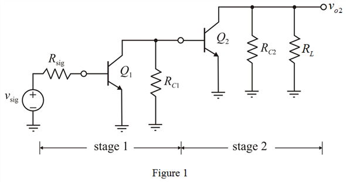
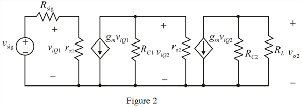

(b)
Apply voltage divider rule to the left side circuit shown in Figure 2.
Determine the Transconductance of each transistor.
Substitute  for
for  and
and  for
for  in the equation.
in the equation.
Draw the two identical Common Emitter (CE) amplifiers are connected in cascade.

(a)
Draw the small-signal equivalent circuit for the circuit shown in Figure 1.

(b)
Apply voltage divider rule to the left side circuit shown in Figure 2.
Determine the Transconductance of each transistor.
Substitute for and for in the equation.
Determine the value of input resistance looking into the base terminal of the first stage.
Substitute for  and
and  for
for  in the equation.
in the equation.
Determine the value of voltage transmission from the signal source to input of the first stage.
Substitute  for and
for and  for
for  in the equation.
in the equation.
Thus, the value of voltage transmission from the signal source to input of the first stage, is.
Write the expression for output voltage at the first stage.
Substitute for  ,
,  for
for  and
and  for
for  in the equation.
in the equation.
Thus, the value of voltage gain for the first stage, is.
(d)
Write the expression for output voltage at the second stage.
Substitute  for
for  ,
,  for
for  and
and  for
for  in the equation.
in the equation.
Thus, the value of voltage gain for the second stage, is.
(e)
Determine the value of overall voltage gain of the amplifier.
Substitute for , for and for  in the equation.
in the equation.
Thus, the value of overall voltage gain of the amplifier, is.